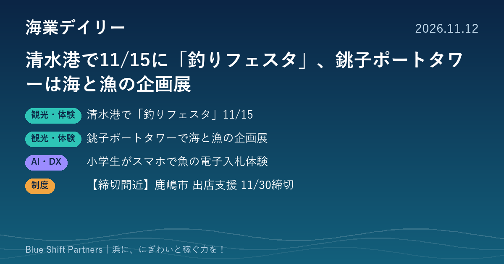

2026.11.12
清水港で11/15に「釣りフェスタ」、銚子ポートタワーは海と漁の企画展

静岡市の清水港日の出ふ頭で、11月15日に埠頭の一部を開放する「釣りフェスタ」が開かれます。千葉県の銚子ポートタワーでは、銚子の魚と漁業文化を紹介する企画展が11月30日まで開かれています。鹿児島の漁協支所では、小学生が電子入札で魚を競り落とす体験も行われました。
静岡市・清水港日の出ふ頭で11月15日に「釣りフェスタ」、埠頭の一部を開放
日本釣振興会静岡県支部が主催し、駿河湾海を守る会と静岡市が共催する「釣りフェスタ」が、2026年11月15日（日）の8時から15時まで、清水港日の出ふ頭の一部を開放して開かれます。入場は無料で、定員はおよそ100人（定員になり次第入場制限）です。希望者向けの釣り体験教室があり、ライフジャケットの着用が義務で、無料で貸し出されます。レンタル竿はサビキ釣りが2,000円、ちょい投げ釣りが1,000円で、専用駐車場はありません。
ここがポイント：ふだん入れない港の岸壁を、日を決めて安全装備つきで開放する形は、漁港や港で釣りを受け入れるときの参考になります。釣り団体・地元の団体・市が役割を分けて運営している点も、浜で同じような催しを考える際のヒントになります。
出典：静岡市「清水港日の出ふ頭『釣りフェスタ』」（2026-09-04）
千葉・銚子ポートタワーで、銚子の魚と漁業文化を紹介する企画展（11月30日まで）
銚子ポートタワーで、「銚子の海を楽しく知って学ぼう！」と題した企画展が2026年11月1日から30日まで開かれています。銚子の海の魚、漁業がもたらした文化、これからの海と町について、写真やイラストで紹介しています。11月15日までは館内で「うみのクイズラリー」も行われ、正解するとイラストカードがもらえます（景品がなくなり次第終了）。開館は9時から17時30分（最終入館17時）で、4階展望室とクイズラリーには展望室の入館券が必要です。
ここがポイント：漁港のそばの観光施設が、魚や漁の文化を展示とクイズで伝えている例です。浜の展望施設や直売所でも、地元の漁を紹介する小さな企画展は、観光客に浜の仕事を知ってもらう入口になります。
出典：銚子市観光協会「銚子ポートタワーで銚子の海を楽しく知って学ぼう！」（2026-10-15）
鹿児島・肝付町の祭りで、小学生約50人がスマホの電子入札で魚を競り落とす体験
2026年10月18日、鹿児島県肝付町の高山やぶさめ祭の会場で、小学生約50人が電子入札を体験する催しが行われたと、鹿児島市のZIFISHが発表しました。主催は肝付町と鹿児島県漁業協同組合高山支所で、ZIFISHは協力として電子入札システムの提供と運営支援を担いました。子どもたちは10人ずつのグループで、持ち点を使って鮮魚の入札を行い、落札した魚を持ち帰りました。
ここがポイント：漁協の入札の仕組みを、地域の祭りで子どもたちの体験に変えた例です。浜の仕事を知ってもらう食育・体験の場として、また漁協がデジタルの仕組みを地域に見せる機会として参考になります。
出典：株式会社ZIFISH（PR TIMES）「小学生約50名が『仲買人』に。高山やぶさめ祭で、スマホの電子入札を体験」（2026-11-11）
【締切間近】茨城県鹿嶋市のチャレンジショップ支援事業補助金、11/30まで
鹿嶋市は、市の対象区域内で観光客の集客が見込める営利事業を新たに始める個人・法人を対象に、出店を補助しています。店舗の改修・建築費は補助率2分の1・上限300万円、コンサルタント等による経営支援を受ける費用は補助率10分の10・上限200万円です。小売・飲食・宿泊・サービス業などが対象で、年度内の開業、1年以上の継続、週3日以上の営業などが条件です。申請期限は11月30日（月）で、商工観光課の窓口へ書類を提出します。
ここがポイント：鹿嶋の対象区域で、観光客向けの飲食店や土産物店、海の幸を出す店を新しく開く計画がある場合に使える可能性があります。申請には鹿嶋市商工会への加入や物件の確保などの条件があり、締切まで残り18日です。
出典：鹿嶋市「令和8年度チャレンジショップ支援事業補助金の募集案内」（2026-10-26）
清水港の釣りフェスタのように、港を日を決めて開放し、安全装備と体験教室をつける形は、漁港で釣り客を受け入れる第一歩として取り入れやすい方法です。銚子の企画展や鹿児島の電子入札体験は、浜の仕事そのものが観光や学びの材料になることを示しています。自分たちの浜で「当たり前」の仕事を、見せ方を変えて届けてみることが、にぎわいの種になります。